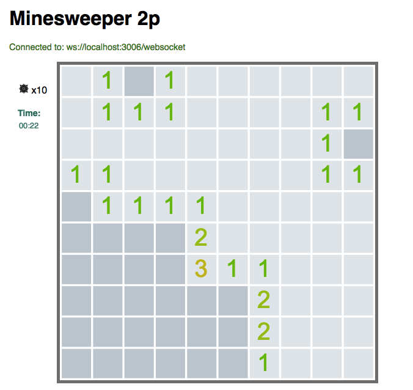

Översikt.
Vår tjänst erbjuder en online-chatt med stöd för att utmana varandra på en omgång minesweeper! En lång list kommandon finns tillgängliga via /help efter att valt ett användarnamn.
Här ser vi ett otroligt vacket spel i full gång!
Features
- Multiplayer turnbased minesweeper
- Challenge your friends
- Graphical interface
- Private chat
- New rules (Blitz chess timer)
Rules
- Player's can only act on their turn
- When a player picks a square his turn ends and the other player's turn begins
- Each player has a 60 seconds timer. The timer only counts down during the player's turn
- If the other player's timer reaches zero or they pick a bomb you win
- If the game finishes with neither player having lost the player with the most time left wins
Design and used techniques
Our connections used TCP and were connected via websockets. We used java who talks to the server and it also talked with a javascript server which got executed on the webpage. The client talked to the serverEvaluation
We fulfilled most of our requirements, but we missed a few connected to the GUI. It was harder and took more time than expected and therfore some functionalities got left out. We also did not implement the "Blitz chess timer" but instead let the game end when a bomb was clicked. It was a very interesting project and very educational. We learned a lot about the network connections and it was very valuable. They should have something similar for the web programming course next year.